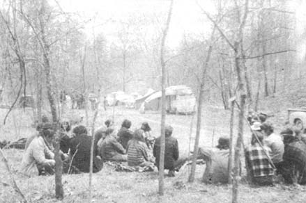

Ed Sabin reads MOTHER and Ed Sabin likes to see good people get together. So for some time now, whenever he'd notice a CONTACT listing from someone in his area (Ed's from Norwood, Missouri), he'd drop them a ge-tacquainted line and tell them about any MOTHER-type people he knew of close by.
It wasn't very long before Ed was corresponding with quite a few like-minded souls in the southern Missouri-northern Arkansas region and he began to ask himself: why not work out a way for all us folks to meet each other in person?
And that's just what Ed finally did. He arranged for the use of Lew Pearson's 40-acre farm, 10 miles south of Norwood, and began inviting all his CONTACT friends to a spring get-together there.
Through Ed's efforts the idea became a reality on April 1, 1972 when five or six communes and many couples, families and singles - a total of about 100 people - made the trip to Lew's farm for a two-day "gathering of the tribes". Bill Byrne, one of the participants, documented the assembly for MOTHER.
Lew's farm offered no "modern conveniences" (like water and electricity) and the gatherers concentrated on living with the land (hauling the water they needed, for example), enjoying themselves and getting to know each other. Shelter was an individual, on-the-spot thing . . . one homesteader's weekend home was a six-foot, plastic-covered dome generally used as a hot house. Several communes brought along portable structures of plywood and fiberglass . . . others erected a small shelter and portable dome . . . many slept under camper roofs, tents and the stars.
Most of the people who came began the weekend as visual strangers . . . but after two days of music (drums, guitar, flute, banjo, etc.), healthy eating, outdoor living and personal interaction "strangeness" had given way to the comforting realization that there were other people who shared the joys and sorrows of creating an alternative lifestyle.
People left the gathering feeling not so alone in their efforts, knowing that they had a lot of new people to visit ("something which is rather nice in the country", says Bill, who hails from Birch Tree, Missouri) and already planning a second get-together for after the fall harvest.
|
 |
|
|